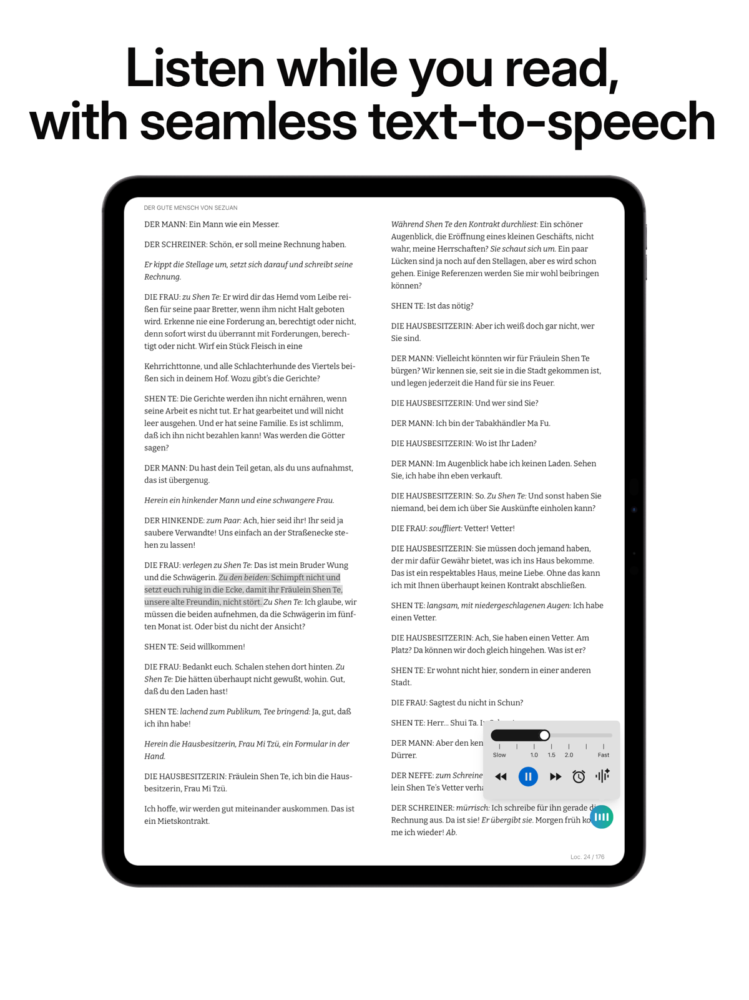
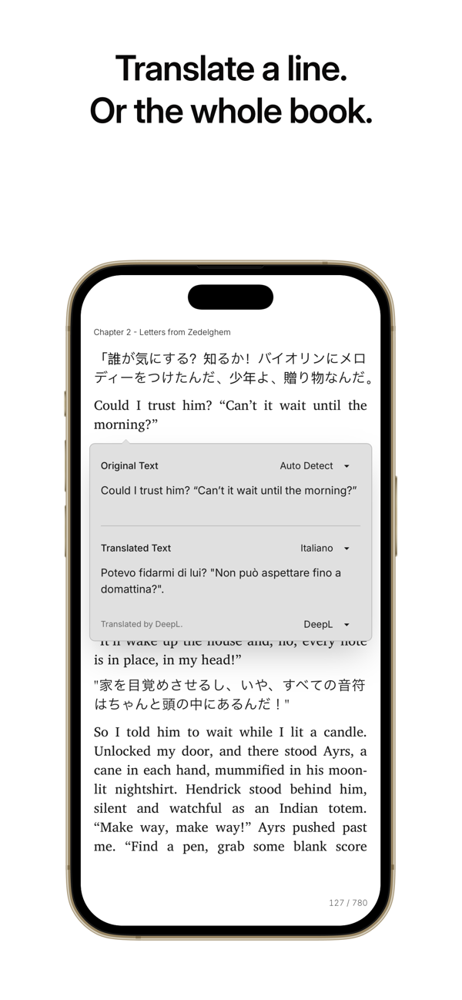

用了 Readest 一周：把网页、书库和耳机串成一条线的阅读工具
从网页剪藏到听书朗读，从划词查词到全设备同步，Readest 让跨场景阅读不再是东拼西凑的事儿。这是我一周上手的真实体验。
前阵子在找一个能同时搞定「网页剪藏 + EPUB 阅读 + 听书」的东西。以前网页文章要么收藏进浏览器然后再也不看，要么存到笔记 App 里排版糊成一坨；电子书装在不同设备上进度不统一；听书的话手机自带播放器又太简陋。听说 readest官网 上介绍它是个开源阅读器，抱着试试看的心态装了，一周用下来有点惊喜——它不是那种某一项做到极致的工具，而是真的能把我日常阅读的几个零散需求串成一条线。
初印象：界面干净得不像开源项目
从 官方下载 装完打开第一眼就舒服：左侧导航栏，中间阅读区，右侧笔记本面板——标准三栏布局但留白做得好，不拥挤。主题默认是浅色，也有深色和护眼绿可以切。字体渲染很清楚，中文排版没看到什么错位或断句问题，翻页速度也快。
说实话我对开源项目的界面通常不抱太高期望，很多要么功能堆得像瑞士军刀，要么交互反人类。Readest 反而走了克制路线，常用操作都藏在快捷键里，鼠标点来点去的场景不多。

网页剪藏：三条通道总有一条适合你
这是我用得最多的功能。平时刷技术博客、看长文报道，读完想留到通勤路上或者睡前细看，以前就两个选择——复制粘贴到笔记 App，或者收藏到浏览器等某天突然想起。Readest 的剪藏体系解决的就是这个问题。
最顺手的是桌面端直接粘贴链接：书架的加号菜单里选「From Web URL」，贴个地址进去就完事。它不是简单抓取 HTML，而是在后台用浏览器内核渲染页面正文再打包成 EPUB——我试过几个带付费墙的技术站，浏览器里能看的它基本都能剪进来。这点比很多纯抓取方案靠谱得多，不会因为页面结构变了就漏内容。
手机上刷到好文章更简单：iOS 或 Android 的系统分享面板里直接选 Readest，文章就入库了。这条通道我用在刷公众号或者 Reddit 帖子的时候特别多，手指点两下，回家电脑上打开书库就能看到。
还有个付费通道是邮箱投递——给你一个专属邮箱地址，把文件当附件发过去就进书库。不过前两条对我已经够用了，暂时没花这个钱。
剪藏进来的文章和导入的 EPUB 在书库里完全平权，可以加高亮、做笔记、听书、翻译，导出标注时也走同一套流程，没有区别对待。这点很重要，很多工具把「剪藏内容」当二等公民看待，功能上打折扣。
听书：快捷键救了我的通勤
每天单程通勤四十分钟，听书是刚需。以前用的 App 要么语速调节是离散档位（0.5、1.0、1.5……调个中间值都不行），要么句级跳转做不好——漏了一句想倒回去，得拖着进度条瞎摸。
Readest 的听书控制确实细腻。语速滑杆从 0.5 倍到 3 倍连续可调，拖动即生效，读到一半切速度也不会从头来。句级跳转的快捷键是 Ctrl+] 和 Ctrl+[，漏一句按一下就倒回去，比拖进度条靠谱一百倍。睡眠定时也实用，躺在床上听到睡着不怕醒来看见书读到了章末——到点自动停。
句高亮样式可以选色块、下划线、波浪线、描边四种，颜色也能改。分页模式下朗读到页边自动翻页，滚动模式则平滑跟随当前句。我平时用分页模式多一点，翻页感更像实体书。
词典查询：一次选中，多源结果堆叠
读英文原著的时候生词查词频率很高。Readest 的查词是一锤多音：选中一个词按 Ctrl+D，内置维基词典、自己导入的离线词典、自定义的网页搜索源，所有启用的提供方结果叠成卡片列出来，逐张展开收起。词形变化也能自动还原——查 running 能命中 run，查 mice 能命中 mouse，这点很加分。
维基百科查询是另一套快捷键（Ctrl+W），直接弹窗出词条摘要，不打断阅读。我有时候读科幻小说遇到陌生的概念词，就顺手弹个维基看看背景。
导入离线词典支持六种格式：StarDict、MDict、DICT、Slob、Babylon、Yomitan，大词典多文件可以一起选中导入，速度比逐个快。我装了一个 MDict 格式的英汉双解，导入后拖动排序到最上面，查词优先走它不用每次手动切换。这些格式支持列表和配置项在 readest文档 里写得很清楚。

适合谁？不适合谁？
适合的人：像我这样同时有电脑、平板、手机三端阅读需求，既看 EPUB 也读网页长文，还想顺便听书的人。跨设备同步、剪藏入库后平权对待、听书控制细腻，这三点是它最有竞争力的地方。键盘党也会喜欢——默认快捷键覆盖了导航、标注、听书、查词几乎所有场景，而且全可改。
不太适合的人：只读固定格式（比如只用 Kindle 不碰 EPUB）、不需要听书功能、或者习惯用某个生态里的阅读器（比如 Apple Books）不想折腾的。Readest 的优势在于综合性，如果你只用单一功能，其他部分可能显得冗余。
还有一点要提：邮箱投递那条通道需要付费解锁，一次性买断或者订阅都行。但前两条剪藏通道（桌面粘贴和手机分享）是免费的，够大多数人用了。
一点题外话
用了这一周，我对「开源阅读器」的刻板印象算是被打破了。之前总觉得开源项目要么功能单一，要么界面粗糙，Readest 在这两点上都做得不错——功能覆盖网页、书籍、听书三条线的同时，界面保持克制，交互也符合直觉。当然还有一些小问题，比如个别冷门电子书的排版偶尔会乱，听书的 TTS 引擎也取决于系统（macOS 上的语音质量比 Windows 好），但整体上已经是我目前用过最顺手的综合阅读工具。
对了，这套工具的资料在三个仓库都能拿到——开源代码和整理好的资源包在 GitHub、Gitee、GitCode 都同步了一份，翻墙不方便换国内镜像就行。